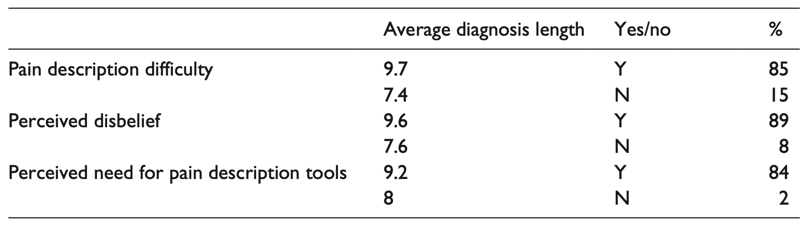
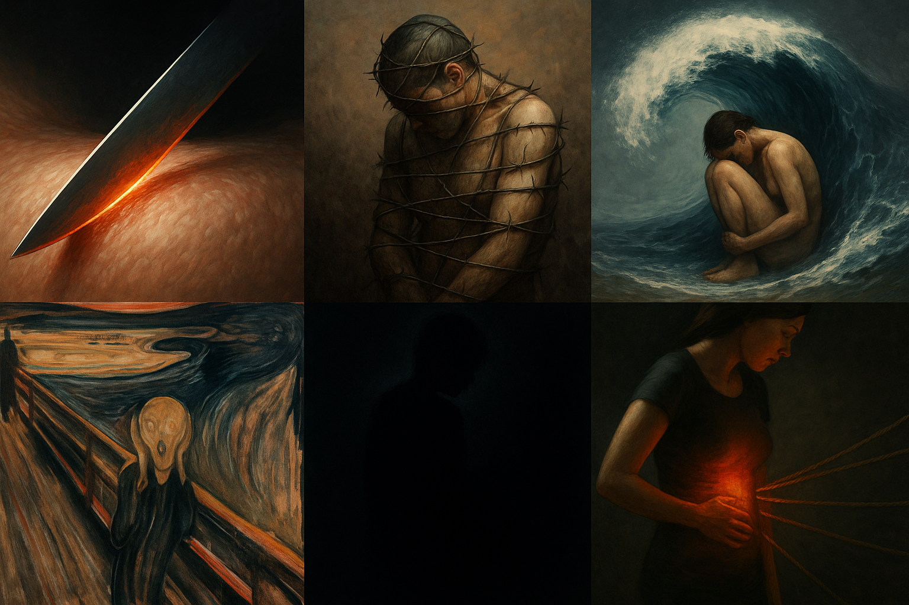
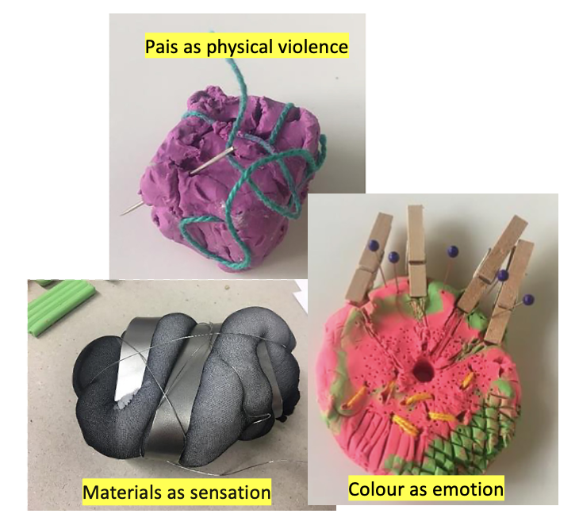

“Salí del quirófano con más cicatrices que respuestas. Entonces supe que, si quería entender lo que me estaba pasando, tenía que ponerle palabras.”

Stella, desde el suelo — cuerpo, dato y compañía.
*Todas las citas que aparecen en esta presentación provienen de entradas de un diario personal que mantuve durante el desarrollo del proyecto.
¿Quién soy?
Soy lingüista, paciente y desarrolladora. Diseñé el proyecto académico The Language of Endometriosis en Reino Unido. Nació de una necesidad doble: decir y comprender el dolor, transformarlo en conocimiento y herramienta.
Motivación
Proyecto anclado en mi experiencia y en una comunidad global de práctica.
El lenguaje de la endometriosis se volvió mi idioma universal por defecto, mi destino lingüístico a largo plazo.
El contexto del dolor: La Endometriosis
La endometriosis es una enfermedad crónica, compleja y multifacética. La experiencia del dolor es central en su diagnóstico y tratamiento. El dolor no es solo un síntoma, es una experiencia vivida que necesita ser entendida para poder ser comunicada.
Objetivo del Proyecto
- Captar la experiencia vivida en sus propias palabras
- Identificar metáforas que estructuran la conceptualización del dolor
- Tender puentes entre pacientes y lenguaje clínico
- Desarrollar herramientas útiles (académicas, clínicas y tecnológicas)
Metodología y Resultados (Bullo, 2018, 2020, 2021)
Se utilizaron entrevistas, focus groups, corpus online y métodos como CDA, CMT, CL, SFL, IPA en un enfoque bilingüe y transcultural. Las encuestas confirmaron los hallazgos sobre barreras comunicativas, negligencia y diagnósticos erróneos.
Resultados comunicativos y metafóricos
Los datos confirmaron reportes de mala comunicación, negligencia y diagnósticos erróneos. El dolor se expresa mediante metáforas visuales y lingüísticas como violencia, encierro, presión o fuego.
Tabla: Desafíos en la comunicación
Collage de metáforas del dolor
Modelos materiales del dolor
Las participantes utilizaron arcilla para representar de forma multisensorial el dolor vivido.
“Hay días en los que pienso que mi cuerpo no está hecho para ser comprendido, sino para resistir.”
El cuerpo como método (Bullo, 2018, 2020, 2021)
Este proyecto nació desde mi cuerpo, mis cirugías, mi silencio acumulado. Posicionarme como investigadora-paciente trajo dilemas éticos complejos, como los que explora Reid (2023) en su estudio autoetnográfico como paciente-investigadora. ¿Cómo corregir sin invalidar? ¿Cómo sostener sin disolverme?
Dilemas éticos y estrategias de contención
- ¿Cómo corregir sin invalidar? ¿Cómo sostener sin disolverme?
- Preguntas que guiaban sin imponer.
- Derivaciones éticas (Endometriosis UK, apoyo emocional).
- La entrevista como acto de cuidado y validación.
Tensiones metodológicas: objeciones y respuestas
- ¿Demasiado centrado en mí? → Enmarca, no eclipsa.
- ¿Demasiado emocional? → La emoción es un dato, no una debilidad.
- ¿Influencia en las participantes? → Lo reconozco, no lo borro.
- ¿Y el rigor? → Validación externa, reflexividad constante.
El dilema del “Professional Stranger” y el “Observer’s Paradox” (Agar, 1980; Labov, 1972)
- Marco teórico: Agar, Labov, autoetnografía, etic/emic.
- Disclosure como estrategia metodológica: abrir el juego para ganar confianza, sabiendo que no hay vuelta atrás.
- Sisterhood como recurso y riesgo: confianza, pero también sobreidentificación.
Lo que no soy (y lo que sí soy)
“Investigar desde adentro me obligó a recordar, todo el tiempo, lo que no soy.”
- No soy médica: aunque tenga información, no puedo corregir diagnósticos.
- No soy psicóloga: aunque escuche con empatía, no puedo intervenir terapéuticamente.
- No soy activista o portavoz: aunque muchas me veían así, no era mi rol hablar “por” ellas.
- No soy amiga: aunque el tono se acercara a una charla íntima, yo tenía un rol específico.
- Sí soy una investigadora con formación ética y sensibilidad situada.
- Sí soy una lingüista que sabe analizar el lenguaje, pero no siempre puede contener la emoción que lo rodea.
- Sí soy una persona con endometriosis que eligió usar esa cicatriz como lente metodológica, no como herramienta terapéutica.
“Mi tarea no era sanar, ni contener, ni corregir. Mi tarea era registrar, interpretar y devolver algo con sentido, sin hacer daño.”
“Empecé este proyecto buscando lenguaje, y terminé construyendo herramientas para que otras pudieran encontrar el suyo.”
Después del dolor y la escritura
Del corpus y la metodología surgieron dos herramientas digitales:
Pain Descriptor Auto-Tagger
Herramienta de investigación que clasifica automáticamente descripciones de dolor según metáforas, intensidad, temporalidad y carga emocional.
Utiliza NLP, regex, corpus lingüístico y conocimiento de lingüística aplicada.
Público objetivo: investigadores en lenguaje, salud y tecnología.
Translate Your Pain
Herramienta en desarrollo para pacientes. Traduce descripciones subjetivas del dolor (metafóricas y emocionales) en un lenguaje clínicamente útil.
Usa NLP, IA, Python y clasificación semántica.
Público objetivo: pacientes con dolor complejo, médicos generalistas y profesionales de salud.
“Durante el proyecto aprendí que sostener la emoción sin perder el rigor también es una forma de método.”
Contribuciones y Cierre
- Metodología situada y encarnada
- Puente entre lingüística, salud y tecnología
- Aplicación ética, empática y útil
“A veces, nombrar el dolor no lo alivia del todo. Pero lo devuelve al mundo, y eso ya es una forma de libertad.”
¿Te interesa colaborar?
Estoy abierta a colaboraciones interdisciplinarias, clínicas y tecnológicas. Si este trabajo te resonó, podés escribirme a stella.bullo.pro@gmail.com.